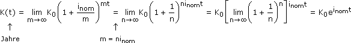
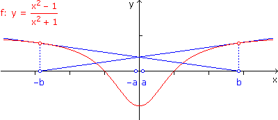
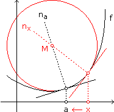
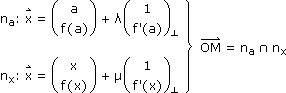
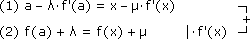
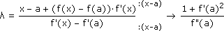
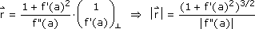
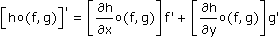
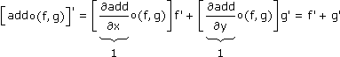
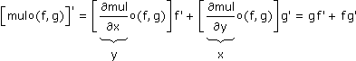

Anhang zu: DIFFERENZIALRECHNUNG
EULERSCHE ZAHL: KONTINUIERLICHE VERZINSUNG?
Der nominelle Jahreszinssatz sagt, dass die Zinsen m-mal im Jahr berechnet und kapitalisiert werden, jeweils mit dem Zinssatz:
inom
m
Für m  ∞ ergibt das eine kontinuierliche Verzinsung, die sich nicht mehr mit Kapitalisierungszeitpunkten herumschlagen muss:
∞ ergibt das eine kontinuierliche Verzinsung, die sich nicht mehr mit Kapitalisierungszeitpunkten herumschlagen muss:
∞ ergibt das eine kontinuierliche Verzinsung, die sich nicht mehr mit Kapitalisierungszeitpunkten herumschlagen muss:
Kontinuierliche Verzinsung können wir auch mit dem Prozentsatz ieff formulieren, um den das Kapital jährlich wächst:
y(t) = K0einomt = K0(1 + ieff)t
 einom = 1 + ieff
einom = 1 + ieffIm Skriptum haben wir die Exponentialfunktion an der Stelle 0 linearisiert (Aufgabe 3). Für Zinssätze, die typischerweise klein sind, heißt das:
einom ≈ inom + 1, also inom ≈ ieff
FUNKTIONIERT DAS NEWTON-VERFAHREN BEI JEDEM STARTWERT?
Nein. Im folgenden Beispiel funktioniert das Newton-Verfahren nur, wenn der Startwert in ±]a, b[ liegt. Liegt der Startwert bei ±b, dann pendelt das Newton-Verfahren. Liegt der Startwert weiter außen, dann läuft es gegen ±∞.

a = 0,090589470
b = 2,850106248
b = 2,850106248
WIE UNTERSCHEIDET MAN PUNKTE MIT WAAGRECHTER TANGENTE?
Bei Punkten mit waagrechter Tangente (vgl. die Potenzfunktionen bei x = 0) differenzieren wir solange, bis f(n)(x) ≠ 0:
| n gerade |

|
f(n)(x) < 0 Hochpunkt f(n)(x) > 0 Tiefpunkt
|
n ungerade |
|
f(n)(x) < 0 LR-Sattelpunkt f(n)(x) > 0 RL-Sattelpunkt
|
HERLEITUNG DER KRÜMMUNGSFORMEL?
|  |

______________________
 |


VERALLGEMEINERTE KETTENREGEL?
Wir beschränken uns auf h:
 2 (die weitere Verallgemeinerung ist dann offensichtlich). Die Funktion
2 (die weitere Verallgemeinerung ist dann offensichtlich). Die Funktionho(f,g):
sagt, dass wir die parametrisierte Kurve (f(t),g(t)) in der xy-Ebene durchlaufen, um die Werte aus dem Funktionsgebirge zu schneiden, das h(x,y) über der xy-Ebene aufbaut. Um diese Funktion abzuleiten, lassen wir t um Δt anwachsen, entfernen uns um (f'(t)Δt,g'(t)Δt) längs der Tangente vom ursprünglichen Kurvenpunkt, lesen den Wertezuwachs auf der Tangentialebene ab und setzen ihn zu Δt ins Verhältnis:

Bem: Die Konstantenregeln, eigentlich Spezialfälle der Summen- und Produktregel, reichen damit schon, um letztere herzuleiten.

und

FORTPFLANZUNG VON UNSICHERHEITEN?
Die Messergebnisse (X,Y) sollen unabhängig voneinander und normalverteilt um den wahren Wert streuen. Die Kurven gleicher Wahrscheinlichkeit sind dann achsenparallele Ellipsen mit dem wahren Wert als Mittelpunkt. Wenn den Messergebnissen, die innerhalb einer solchen Ellipse liegen, in Summe die Wahrscheinlichkeit γ zukommt, sprechen wir vom γ-Zufallsstreubereich.
Dass ein Messergebnis im γ-Zufallsstreubereich liegt, bedeutet, dass diesselbe Ellipse um das Messergebnis herum den wahren Wert "einfängt". Das Intervall vom kleinsten zum größten Wert, den ein Funktionsgebirge über dieser Ellipse annimmt, fängt dementsprechend den wahren Funktionswert ein. Um den Rechenaufwand in Grenzen zu halten, betrachten wir statt dem Funktionsgebirge dessen Tangentialebene im Messpunkt.
Kreis mit Radius a in y-Richtung skaliert, sodass a
b, ergibt Ellispe mit Halbachsen a (= Δx) und b (= Δy):Kreis: x2 + y2 = a2
y = ±√a2 – x2 Ellipse: y = ±b
a
In welchem Punkt (x,y) dieser Ellipse hat die Ebene z = k1x + k2y ihren größten Wert? Dort, wo die Höhenlinien der Ebene zugleich Tangenten an die Ellipse sind. Die Höhenlinien wiederum stehen normal auf den Gradientenvektor (k1,k2), also:
–
k1
k2
b
a
1
2
k12
k22
b2
a2
k12
k22
k12a2 + k22b2
k22a2
x2 =
k12a4
k12a2 + k22b2
y2 =
b2
a2
k12a2b2
k12a2 + k22b2
k22b4
k12a2 + k22b2
Falls k1, k2 dasselbe/verschiedene Vorzeichen haben, haben das auch x und y, also ist der größte Wert
zmax =
k12a2 + k22b2
√k12a2 + k22b2